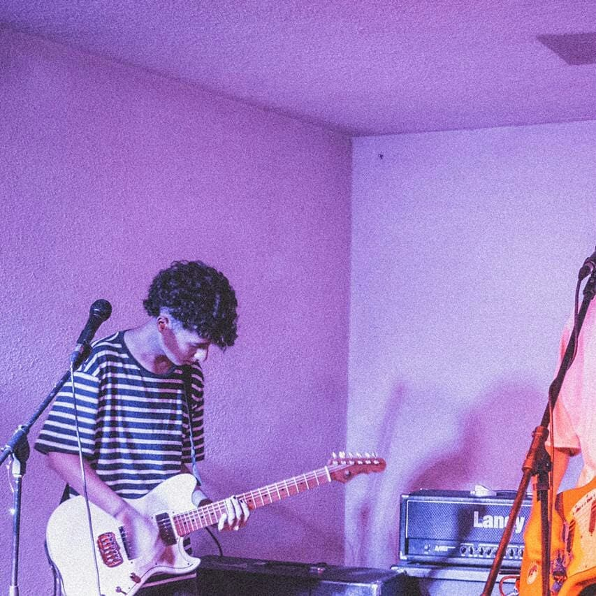

Música de Chile para personas que gustan de las atmoferas que puede ofrecer la música, siempre me gustó la idea de crear ambientes instrumentados y dejar la dependencia al elemento vocal, con el tiempo adquirio forma como si fuera la banda sonora de una pelicula o la musica de una obra de teatro, solo que sin la misma, espero que logre traerles felicidad y que sea de compañia para la imaginación.
Franco Echeverría.
